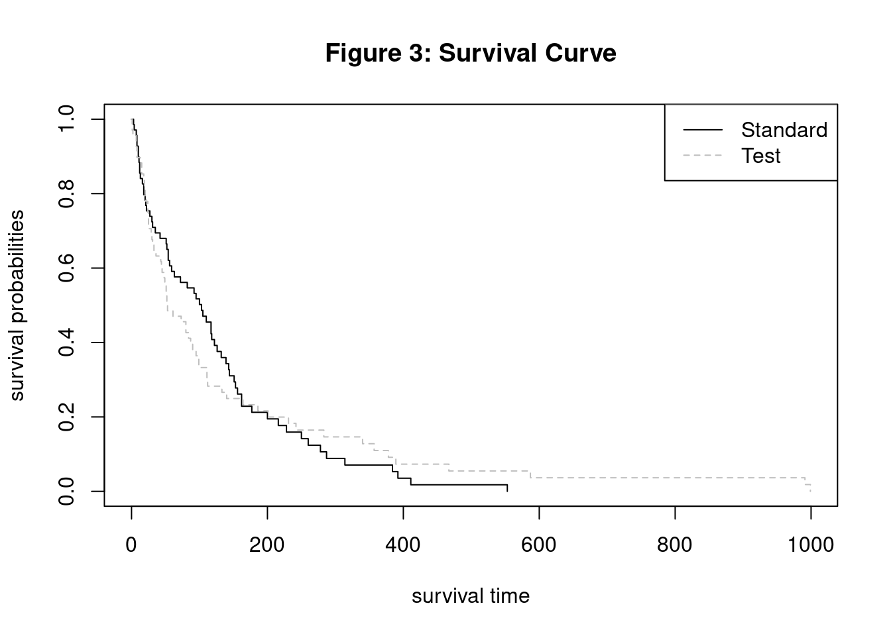

Cox Proportional Hazards Model Group Project
1. Introduction
The Cox Proportional Hazards (CPH) model is a method used for performing survival analyses, often in the medical field. It is used to relate several risk factors simultaneously against survival time and is widely considered to be one of the most popular methods in survival analyses. One of the key reasons why it is popular in survival analysis is due to its ability to handle censored time-to-event data (Fisher and Lin 1999). “Censored” in this case would mean that some observed units were recorded for various lengths of time, but the event of interest did not occur during those studies. With this, Sir David Cox, the inventor of the model, considered such predictors and covariates when creating the Cox method. The risks, or “hazards,” were thought of as proportional to the probability of an event occurring at any particular time. Some of the risk factors used in its analyses include covariates – independent variables that can influence the outcome of an event but are not of direct interest in a study - such as treatment, age, gender, height, and so on. Another key factor in the CPH’s popularity in survival analysis is its semiparametric nature (Kleinbaum et al. 2012). The composition of the model is as follows:
\[ H(t) = H_0(t) \times exp(b_1x_1 + b_2x_2 + ... + b_kx_k) \]
Where \(H_0 (t)\) is considered to be the baseline hazard function of the model. If in the event all other variables X are equal to zero, the formula reduces to \(H_0 (t)\) ; hence, it is the baseline hazard function. It is due to the hazard function being unspecified that the CPH model can be considered semiparametric. In other words, it is semiparametric because there is no assumption about the distribution of survival times, but rather assumes that the effects of different variables that affect survival are constant over time, hence the composition of its formula (D’Arrigo et al. 2021). Where parametric models have completely specified functional forms, the unspecified nature of the baseline hazard function allows the CPH model to be naturally more flexible. Another reason for its popularity is that even with an unspecified hazard function, the CPH model is robust, being able to obtain favorable results such as good estimates of regression coefficients, hazard ratios of interest, and adjusted survival curves (Kleinbaum et al. 2012). As a robust model, the CPH method can obtain results comparable to those of a parametric model. While parametric methods are still preferred over the CPH models in cases where the correct method is clearly indicated, the CPH model demonstrates its versatility by being both semiparametric in nature as well as attaining comparable results to its parametric counterparts.
1.1. Application
While the Cox Proportional Hazard model is mainly used for modeling survival data and identifying relationships between predictors and survival times, and is commonly used in the medical research field, it has also been applied in fields like finance and the social sciences. (Hendry 2014) In medical research it is used to identify factors that influence patient outcomes, e.g. death or other health status. For example, (Thiruvengadam, Lakshmi, and Ramanujam 2021) used the Cox model to analyze the factors that determine the length of stay for COVID-19 patients, using different demographic and health information to find connections to the length of stay or even death of patients. (Thiruvengadam, Lakshmi, and Ramanujam 2021) Other medical research often mirrors this structure and the model has also been applied in the context of clinical trials. For example, researchers used the model to determine treatment risks and treatment effectiveness for those in a systolic blood pressure intervention trial, finding a 25% lower hazard rate for those receiving intensive treatment. (Stensrud et al. 2019) The Cox proportional hazard model excels at modeling this type of scenario, using survival data that can be censored, i.e. as in the case where patients have died or left the study. Although commonly used for medical research, the application is straightforward in other fields with some research looking at the duration of events like marriages, recidivism, and bank failures. For example, researchers examining the factors leading to bank failure used the 2008 recession as a case study to determine and predict what factors, e.g. asset ratios and loan amounts, are indicators of failure. (R. A. Cox, Kimmel, and Wang 2017) The model has some limitations especially when not including time dependent structure in the model. In that case, the model assumes the hazard ratio is the same across the time sample, which is often not the case in medical research. This shortcoming is identified in (Stensrud and Hernán 2020), which highlights how treatment effects may not be constant over a whole sample and in some cases may have no effect for months and then a drastic effect after some time. This has led to the use of models which can include time dependent variables.
2. Methods
The Cox PH model proposed in 1972 allows the estimation of regression coefficients of a hazard function without specifying the baseline hazard (D. R. Cox 1972) The hazard function is the instantaneous risk of failure at time (t). The hazard function for other survival distributions such as Weibull take the form below:
\[h_i(t)= exp \times (α+ Z_iβ) \]
where
\(h_i(t)\) is the hazard function with respect to time
α is a constant that represents baseline hazard when all Zs are zero
\(Z_i\) are the covariates measured for \(i\)-th individuals (\(Z_{1i}+, Z_{2i}, ..., Z_{pi}\)) is the unknown regression coefficients (Fox 2002).
In contrast to Weibull, the Cox PH model leaves the baseline hazard unspecified (i.e. \(α=h_i(t)\) ), and this baseline function can fluctuate with respect time instead of remaining constant.
\[h_i(t)= h_0(t) exp(Z_iβ) \] where
\(h_i(t)\) is the hazard function with respect to time
\(h_0(t)\) is the unknown baseline hazard function which can fluctuate with respect to time (D. R. Cox 1972).
To demonstrate the impact of differing variables on the hazard function, Cox used the example of one Z variable (p=1) with values 0 and 1. The corresponding hazard functions become \(h_0(t)\) and \(h_0(t) \times exp(\beta)\) (D. R. Cox 1972). This example can be extended to include more variables and used to calculate the hazard ratio for the two cases:
\[ {h_i(t) \over h_{i'}(t)} = {h_0(t)\times exp(\eta_i) \over h_0(t) \times exp(\eta_{i'})} = {exp(\eta_i) \over exp(\eta_{i'})} \]
Where
\(h_i(t) \over h_{i'}(t)\) is the hazard ratio (HR) and is assumed to be constant with respect to time [Stensrud et al. (2019)](Fox 2002)
\(\eta_i\) is corresponding linear predictors of \(i\)
\(\eta_{i'}\) is corresponding linear predictors of \(i'\)
The benefit of the Cox PH model is that the baseline hazard function can fluctuate with time instead of being constant or multiplicative. Another benefit is that the regression coefficients can be estimated without knowing the baseline hazard using the partial likelihood method as proposed by Cox (1972). Although the baseline hazard function can fluctuate, the Cox PH model assumes that the hazard ratio (HR) is constant. If the constant HR assumption is broken, one solution is to include an interaction between the covariate and time into the Cox model which is called time-dependent covariates (Fox 2002) . Time dependent covariates are variables that vary with respect to time. Time dependent covariates can be modeled in the Cox by replacing \(Z_i\) with \(Z_i(t)\) which indicates that \(Z_i\) varies with respect to time.
\[h_i(t)= h_0(t) exp(Z_i(t)β) \]
where
\(h_i(t)\) is the hazard function with respect
\(Z_i(t)\) are the covariates that may be time-fixed or time-dependent (Hendry 2014) is the unknown regression coefficients.
The hazard ratio (HR) then becomes the following:
\[ {h_0(t) \times exp(Z_i(t)β) \over h_0(t) \times exp(Z_j(t)β)} = {exp(Z_i(t)β) \over exp(Z_j(t)β)} \]
This allows the use of Cox PH for non-constant HR if the covariate is time-dependent. In general, the log hazard and covariates are assumed to be linear in the Cox PH model (Fox 2002). The Cox model also assumes that the failure time of an individual is independent of the other individuals. This means that if one participant in a study dies that no other participants are affected. The Cox PH also assumes that censored individuals have a failure time that exceeds the censoring time (D. R. Cox 1972). For example, a participant is still alive at the end of the study and is right-censored. The assumptions of proportional HR, independent individuals and right-censoring also applies to other exponential survival distributions (Fox 2002) (Hendry 2014). A key downside of Cox PH is that the survival function cannot be calculated since the baseline hazard is unknown. This hinders clinicians in determining the net benefit of treatments (McLernon et al. 2023).
3. Analysis and Results
3.1. Data Description
The data used is from a Veteran’s Administrative lung cancer trial of 137 male patients with advanced inoperable lung cancer. Kalbfleisch and Prentice (2011) The data set is available through the MASS package in R. This data is ideal for modeling with a Cox Proportional Hazard model with the survival time and treatment variables being of the most interest. The focus of this research is to find out if the treatment has a positive effect on survival time, and we will test if any of the other variables also have any significant effect on survival time.
| Attribute | Type | Description |
|---|---|---|
| stime | Numeric | survival or follow-up time, in days |
| status | Numeric | dead or alive/censored; 0 (alive), 1 (dead) |
| treat | Nominal | treatment, either standard or test (chemotherapy); 1 (standard), 2 (test) |
| age | Numeric | patient age in years |
| Karn | Numeric | Karnofsky score of patient performance, on scale of 0 to 100 |
| diag | Numeric | patient time since diagnosis, measured at time of entry to trial, in months |
| cell | Nominal | one of four cell types; 1 (squamous), 2 (small cell), 3 (adeno), 4 (large) |
| prior | Nominal | denotes prior therapy; 10 (yes), 0 (no) |
Per the National Cancer Institute, the Karnofsky score is standard way to measure how well a patient can perform ordinary tasks. A higher score indicates a higher ability to do these tasks, in our study this score is taken at the start of the study.
3.2. Data Visualization
Code
# Load Data
data(VA)
#look at first few rows
kable(head(VA, 3), caption = "Table 2: Sample Rows from VA Lung Trial Data") %>%
kable_styling(bootstrap_options = c("striped", "hover"), full_width = TRUE) %>%
row_spec(0, bold = T, background = "#666666", color = "white")| stime | status | treat | age | Karn | diag.time | cell | prior |
|---|---|---|---|---|---|---|---|
| 72 | 1 | 1 | 69 | 60 | 7 | 1 | 0 |
| 411 | 1 | 1 | 64 | 70 | 5 | 1 | 10 |
| 228 | 1 | 1 | 38 | 60 | 3 | 1 | 0 |
Code
summary_stats <- summary(VA[, c("stime", "status", "age", "Karn", "diag.time")])
#Convert summary statistics to a table
kable(summary_stats, caption = "Table 3: Summary Statistics for VA Lung Trial Data") %>%
kable_styling(bootstrap_options = c("striped", "hover"), full_width = TRUE) %>%
row_spec(0, bold = T, background = "#666666", color = "white")| stime | status | age | Karn | diag.time | |
|---|---|---|---|---|---|
| Min. : 1.0 | Min. :0.0000 | Min. :34.00 | Min. :10.00 | Min. : 1.000 | |
| 1st Qu.: 25.0 | 1st Qu.:1.0000 | 1st Qu.:51.00 | 1st Qu.:40.00 | 1st Qu.: 3.000 | |
| Median : 80.0 | Median :1.0000 | Median :62.00 | Median :60.00 | Median : 5.000 | |
| Mean :121.6 | Mean :0.9343 | Mean :58.31 | Mean :58.57 | Mean : 8.774 | |
| 3rd Qu.:144.0 | 3rd Qu.:1.0000 | 3rd Qu.:66.00 | 3rd Qu.:75.00 | 3rd Qu.:11.000 | |
| Max. :999.0 | Max. :1.0000 | Max. :81.00 | Max. :99.00 | Max. :87.000 |
Code
#second prop summary
summary_stats2 <- summary(VA[, c("status", "treat", "cell", "prior")])
#Convert summary statistics to a table
kable(summary_stats2, caption = "Table 4: Summary Count Statistics for VA Lung Trial Data") %>%
kable_styling(bootstrap_options = c("striped", "hover"), full_width = TRUE) %>%
row_spec(0, bold = T, background = "#666666", color = "white")| status | treat | cell | prior | |
|---|---|---|---|---|
| Min. :0.0000 | 1:69 | 1:35 | 0 :97 | |
| 1st Qu.:1.0000 | 2:68 | 2:48 | 10:40 | |
| Median :1.0000 | NA | 3:27 | NA | |
| Mean :0.9343 | NA | 4:27 | NA | |
| 3rd Qu.:1.0000 | NA | NA | NA | |
| Max. :1.0000 | NA | NA | NA |
Code
#Create a scatter plot matrix using the GGally package
va_subset <- VA[, c("stime", "age", "Karn", "diag.time", "treat")]
ggpairs(va_subset, title = "Scatterplot Matrix of VA Lung Trial Data",
columns = c("stime", "age", "Karn", "diag.time"), ggplot2::aes(color = treat),
lower = list(continuous = "points", combo = "dot_no_facet", mapping = ggplot2::aes(color=treat, alpha = 0.8)),
diag = list(continuous = wrap("densityDiag"), mapping = ggplot2::aes(color = treat, alpha = 0.1))) +
scale_color_manual(values = c("#00BFC4", "#F8766D"))
This plot shows a scatterplot matrix of the variables of Survival Time, Age, Karnofsky Score, and Diagnosis Time where the lower half is a typical scatter plot between the two variables in the cell, the diagonal shows a density plot, and the upper diagonal shows a correlation coefficient between the two variables with significance indicators. The plots are grouped/colored by the treatment groups, with those receiving chemotherapy in red. The only variable significantly correlated with Survival Time is the Karnofsky score, at the alpha 0.05 level. Looking at the density plots, the standard group’s plot in blue is more concentrated to the left of the group receiving chemotherapy which indicates a lower survival time for those in the standard treatment group. In general survival time seems to be positively correlated with the other variables, but the strength of this correlation is not apparent from the graphs.
3.3. Statistical Modeling
Treatment Only Cox PH Model
Code
# Label variables for gtsummary tables
attr(VA$treat, "label") = "Treatment"
attr(VA$Karn, "label") = "Karnofsky score"
attr(VA$age, "label") = "Patient's age"
attr(VA$diag.time , "label") = "Time since diagnosis"
attr(VA$cell , "label") = "Cell type"
attr(VA$prior, "label") = "Prior therapy"
levels(VA$treat) = c("standard", "test")
levels(VA$cell) = c("1-squamous", "2-small cell", "3-adeno", "4-large")
levels(VA$prior) = c("yes", "no")Cox PH model allows us to determine the effect of variables by using the hazard ratio (HR). First, we will use treatment variable to determine if it is significant.
Code
# Fit model with treatment only
Y = Surv(VA$stime, VA$status)
cox.unimod <- coxph(Y ~ treat, data=VA)
cox.unimod %>% tbl_regression(exponentiate = T) %>%
add_glance_table(
include = c(logLik, concordance)
)| Characteristic | HR1 | 95% CI1 | p-value |
|---|---|---|---|
| Treatment | |||
| standard | — | — | |
| test | 1.02 | 0.71, 1.45 | >0.9 |
| Log-likelihood | -505 | ||
| c-index | 0.525 | ||
| 1 HR = Hazard Ratio, CI = Confidence Interval | |||
The Cox PH model found that the treatment type only is insignificant. A key assumption of the Cox PH model is that the hazard is proportional (i.e. the HR is constant across time). To validate the proportional hazard assumption, we will use the scaled Schoenfield’s residuals to compare the difference between the estimated coefficient for treatment and a proportional hazard based model. If the HR is constant, the smoothed residual curve will stay around 0 as time increases, which validates the proportional hazard assumption.
Code
# Plotting graphs of Schoenfield residuals vs time
phtest.unimod = cox.zph(cox.unimod, transform = rank)
plot(phtest.unimod)
abline(h=0)From the plot, we can see that the confidence interval for the residuals stay around 0. We will also run a statistical test against the Scheonfeld residuals to determine if the residuals are correlated with time. A small p-value (less than 0.05) means there is a significant correlation between the residuals and time, which means the proportional hazard assumption is invalid.
Code
# Using Scheonfeld to test for proportional-hazards assumption
phtest.unimod chisq df p
treat 3.53 1 0.06
GLOBAL 3.53 1 0.06Based on the p-value for treatment, we fail to reject the null hypothesis that the proportional hazard assumption is valid. Since the p-value is very close to the cutoff, we will use a graphical method based the survival probability curve.
While the Cox PH model can inform us of a variable’s effect, we are unable to determine the probability of survival at a given time. To address this, we will use the Kaplan-Meier method to estimate the probability of survival with respect to time. Using the Kaplan-Meier estimates, we can plot estimated survivor curves for both treatments.
Code
# Plotting graph of Kaplan-Meier curve
kmfit = survfit(Y ~ treat, data=VA)
plot(kmfit, lty = c("solid", "dashed"), col=c("black","grey"),
xlab="survival time",ylab="survival probabilities")
legend("topright", c("Standard","Test"), lty=c("solid","dashed"),
col=c("black","grey"))
Code
#Log log of survival curve
plot(kmfit,fun="cloglog", lty = c("solid", "dashed"), col=c("black","grey") ,xlab="time",ylab="log-log survival", main="log-log curves")
legend("topleft", c("Standard","Test"), lty=c("solid","dashed"),
col=c("black","grey"))
Code
tbl_survfit(kmfit,
times=c(15, 30, 90,180,360),
label_header="**{time} Days**"
)| Characteristic | 15 Days | 30 Days | 90 Days | 180 Days | 360 Days |
|---|---|---|---|---|---|
| Treatment | |||||
| standard | 84% (76%, 93%) | 72% (63%, 84%) | 55% (44%, 68%) | 21% (13%, 34%) | 7.1% (2.8%, 18%) |
| test | 85% (77%, 94%) | 68% (57%, 80%) | 38% (28%, 52%) | 23% (15%, 36%) | 11% (5.3%, 23%) |
From the two plot, we observe that the effectiveness of test treatment is less effective in the beginning. Then, the test treatment becomes more effective than the standard treatment towards the end. With Kaplan-Meier survival curves, we are able to visualize survival probabilities for both treatment groups. Since the hazard function is the rate of change in the survival curve, we can use the Kaplan-Meier to also validate the proportional hazard assumption. The survival curves would be parallel if the hazard was proportional. However, the curves cross multiple time which informs us that the proportional hazard assumption is actually invalid.
Multiple Variable Cox PH Model
Now, we will insert all the variables in the Cox PH model and use Schoenfeld residuals to determine which variables specifically violate the proportional hazard assumption.
Code
# Fit model with all variables.
# stime and status are the output values
cox.mod <- coxph(Y ~ treat + age + Karn + diag.time + cell + prior, data=VA)
cox.mod %>% tbl_regression(exponentiate = T) %>%
add_glance_table(
include = c(logLik, concordance)
)| Characteristic | HR1 | 95% CI1 | p-value |
|---|---|---|---|
| Treatment | |||
| standard | — | — | |
| test | 1.34 | 0.89, 2.02 | 0.2 |
| Patient's age | 0.99 | 0.97, 1.01 | 0.3 |
| Karnofsky score | 0.97 | 0.96, 0.98 | <0.001 |
| Time since diagnosis | 1.00 | 0.98, 1.02 | >0.9 |
| Cell type | |||
| 1-squamous | — | — | |
| 2-small cell | 2.37 | 1.38, 4.06 | 0.002 |
| 3-adeno | 3.31 | 1.83, 5.96 | <0.001 |
| 4-large | 1.49 | 0.86, 2.60 | 0.2 |
| Prior therapy | |||
| yes | — | — | |
| no | 1.07 | 0.68, 1.69 | 0.8 |
| Log-likelihood | -474 | ||
| c-index | 0.736 | ||
| 1 HR = Hazard Ratio, CI = Confidence Interval | |||
Code
# Using cox.zph() to test for proportional-hazards assumption
phtest.mod = cox.zph(cox.mod, transform = "rank")
phtest.mod chisq df p
treat 0.27566 1 0.59956
age 1.76999 1 0.18338
Karn 13.53155 1 0.00023
diag.time 0.00766 1 0.93025
cell 15.39791 3 0.00151
prior 2.23094 1 0.13527
GLOBAL 35.22254 8 2.4e-05Code
# Plotting graphs of Schoenfield residuals vs time
par(mfrow=c(1,2))
plot(phtest.mod[3])
plot(phtest.mod[5])
The significant variables of Karnofsky score and cell type were found to violate the proportional hazard assumption. In order to use them for analysis, we could implement a Stratified Cox model, or we could use an Extended Cox PH model for Time-Dependent variables.
Don’t leave in final report
Unfortunately, we know that the hazards are not proportional since the curves cross. It would be unreliable for us to use the Cox PH across the entire time interval. For this analysis, we will run the Cox PH model over specific time intervals where the hazard ratio is constant. Before we can run the Cox PH across the intervals of 0-30, 31-60, and 60+ days, we must create a new “stop” column from the original dataset.
Code
#VA.cp = survSplit(Surv(stime, status) ~ ., data=VA, cut=30, episode="tgroup")
#VA.cp$tgroup = as.factor(VA.cp$tgroup)
#VA.cp = survSplit(VA, cut=30, start="tstart", end="stime", event="status", id="id")
#VA.cp$treatment = as.integer(VA.cp$treat) + 1
#VA.cp$hv1=VA.cp$treatment*(VA.cp$tstart<30)
#VA.cp$hv2=VA.cp$treatment*(VA.cp$tstart>=30)
#head(VA.cp)Code
#cox.interval <- coxph(Surv(tstart, stime, status) ~ treat:strata(tgroup), data=VA.cp)
#cox.interval <- coxph(Surv(tstart, stime, status) ~ hv1 + hv2 + cluster(id), data=VA.cp)
#summary(cox.interval)Code
# Can we drop age, diag.time, and prior
cox.mod2 <- coxph(Surv(stime, status) ~ treat + Karn + cell, data=VA)
summary(cox.mod2)Call:
coxph(formula = Surv(stime, status) ~ treat + Karn + cell, data = VA)
n= 137, number of events= 128
coef exp(coef) se(coef) z Pr(>|z|)
treattest 0.261744 1.299194 0.200923 1.303 0.19267
Karn -0.031271 0.969213 0.005165 -6.054 1.41e-09 ***
cell2-small cell 0.824980 2.281836 0.268911 3.068 0.00216 **
cell3-adeno 1.153994 3.170833 0.295038 3.911 9.18e-05 ***
cell4-large 0.394625 1.483828 0.282243 1.398 0.16206
---
Signif. codes: 0 '***' 0.001 '**' 0.01 '*' 0.05 '.' 0.1 ' ' 1
exp(coef) exp(-coef) lower .95 upper .95
treattest 1.2992 0.7697 0.8763 1.9262
Karn 0.9692 1.0318 0.9595 0.9791
cell2-small cell 2.2818 0.4382 1.3471 3.8653
cell3-adeno 3.1708 0.3154 1.7784 5.6534
cell4-large 1.4838 0.6739 0.8534 2.5801
Concordance= 0.737 (se = 0.022 )
Likelihood ratio test= 61.07 on 5 df, p=7e-12
Wald test = 63.41 on 5 df, p=2e-12
Score (logrank) test = 66.55 on 5 df, p=5e-13We will use ANOVA with the Likelihood Ratio test to determine if we can simplify the model. Since the difference in Likelihood ratio test is insignificant, we can simplify the model to treat + Karn + cell.
Code
# Using anova with Likelihood ratio test
anova(cox.mod2, cox.mod, test="LRT")Warning in anova.coxphlist(object, test = test): Models with response "Y"
removed because response differs from model 1Analysis of Deviance Table
Cox model: response is Surv(stime, status)
Terms added sequentially (first to last)
loglik Chisq Df
NULL -505.45
treat -505.44 0.0096 1
Karn -483.97 42.9571 1
cell -474.91 18.1024 3Code
cox.zph(cox.mod2) chisq df p
treat 0.206 1 0.64968
Karn 12.813 1 0.00034
cell 14.532 3 0.00226
GLOBAL 22.860 5 0.00036Code
# Can we also remove treat from the model
cox.mod3 <- coxph(Surv(stime, status) ~ Karn + cell, data=VA)
summary(cox.mod3)Call:
coxph(formula = Surv(stime, status) ~ Karn + cell, data = VA)
n= 137, number of events= 128
coef exp(coef) se(coef) z Pr(>|z|)
Karn -0.031057 0.969421 0.005177 -5.999 1.99e-09 ***
cell2-small cell 0.715334 2.044870 0.252686 2.831 0.00464 **
cell3-adeno 1.157733 3.182711 0.292937 3.952 7.74e-05 ***
cell4-large 0.325645 1.384923 0.276680 1.177 0.23921
---
Signif. codes: 0 '***' 0.001 '**' 0.01 '*' 0.05 '.' 0.1 ' ' 1
exp(coef) exp(-coef) lower .95 upper .95
Karn 0.9694 1.0315 0.9596 0.9793
cell2-small cell 2.0449 0.4890 1.2462 3.3555
cell3-adeno 3.1827 0.3142 1.7925 5.6513
cell4-large 1.3849 0.7221 0.8052 2.3820
Concordance= 0.734 (se = 0.023 )
Likelihood ratio test= 59.37 on 4 df, p=4e-12
Wald test = 61.26 on 4 df, p=2e-12
Score (logrank) test = 63.94 on 4 df, p=4e-13Code
# Using anova with Likelihood ratio test
anova(cox.mod3, cox.mod2, test="LRT")Analysis of Deviance Table
Cox model: response is Surv(stime, status)
Model 1: ~ Karn + cell
Model 2: ~ treat + Karn + cell
loglik Chisq Df Pr(>|Chi|)
1 -475.76
2 -474.91 1.6974 1 0.1926With the other variables removed, we will check if treatment is now a significant variable in the model using another ANOVA test. Based on the ANOVA test, we can also remove treatment from the model
\[ h(t) = {h_0(t)} \times exp(-0.031X_{Karn}+0.715X_{cell-small}+1.16X_{cell-adeno}+0.325X_{cell-large}) \]
Code
summary(cox.mod3)Call:
coxph(formula = Surv(stime, status) ~ Karn + cell, data = VA)
n= 137, number of events= 128
coef exp(coef) se(coef) z Pr(>|z|)
Karn -0.031057 0.969421 0.005177 -5.999 1.99e-09 ***
cell2-small cell 0.715334 2.044870 0.252686 2.831 0.00464 **
cell3-adeno 1.157733 3.182711 0.292937 3.952 7.74e-05 ***
cell4-large 0.325645 1.384923 0.276680 1.177 0.23921
---
Signif. codes: 0 '***' 0.001 '**' 0.01 '*' 0.05 '.' 0.1 ' ' 1
exp(coef) exp(-coef) lower .95 upper .95
Karn 0.9694 1.0315 0.9596 0.9793
cell2-small cell 2.0449 0.4890 1.2462 3.3555
cell3-adeno 3.1827 0.3142 1.7925 5.6513
cell4-large 1.3849 0.7221 0.8052 2.3820
Concordance= 0.734 (se = 0.023 )
Likelihood ratio test= 59.37 on 4 df, p=4e-12
Wald test = 61.26 on 4 df, p=2e-12
Score (logrank) test = 63.94 on 4 df, p=4e-133.4. Interpretations [Need to revisit]
At a given instant of time, the probability of dying for a male VA patient as Karnofsky score increases by 1 point is 0.969 times less (or 3.15% lower) after adjusting for cell type.
At a given instant of time, the probability of dying for a male VA patient with small cell is 2.04 times more than a male VA patient with squamous cell type after adjusting for Karnofsky score.
At a given instant of time, the probability of dying for a male VA patient with adeno cell is 3.18 times more than a male VA patient with squamous cell type after adjusting for Karnofsky score.
At a given instant of time, the probability of dying for a male VA patient with large cell is 1.38 times more than a male VA patient with squamous cell type after adjusting for Karnofsky score.
4. Conclusion [Need to finalize]
The Cox Proportional Hazards model is a incredibly versatile tool for data analysis. With its semiparametric nature and achieving comparable results to that of its parametric counterparts, it is a useful tool to analyze covariates in the healthcare field. With this model, researchers are able to accurately determine which risk factors may play a part in the survival time of a patient. In this paper, we were able to review which variables were significant in terms of impact on survival time. In our example, we determined that some cell variables and the Karnofsky score of patients were significant as opposed to treatment, which was surprisingly deemed insignificant in our testing. Another observation that was noted during the review was that the PH assumption was violated, meaning that there could be biased effect estimates in our dataset. A way to adjust for this in future projects would be to introduce time-dependent covariates. While it is preferable to conduct a study with more available data, the Cox Proportional Hazards model allows some room for censored and missing information while not compromising much in terms of accuracy.